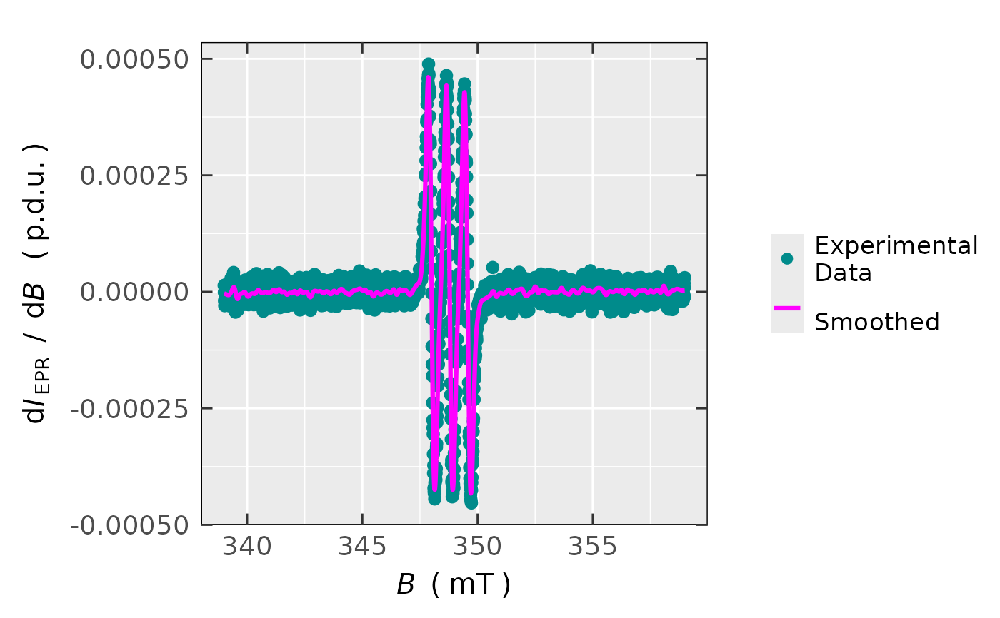
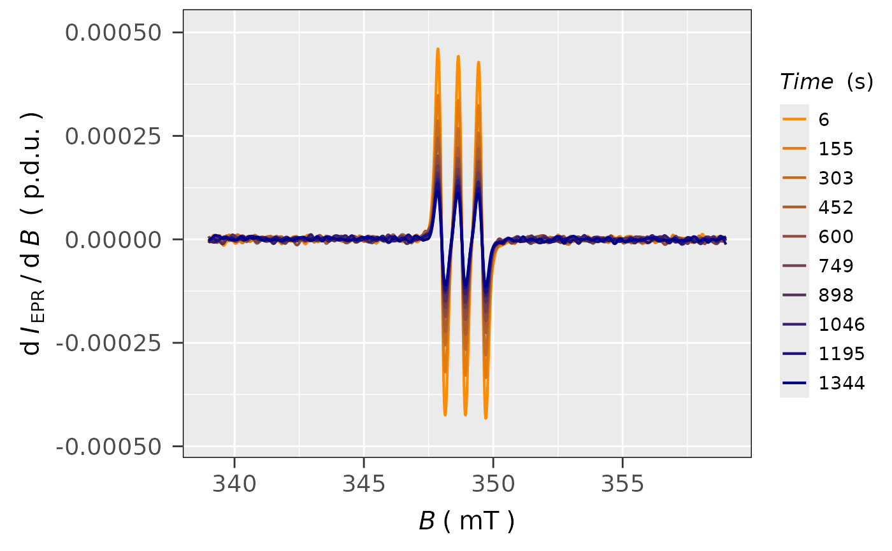

Smoothing and Fitting of an EPR Spectrum by Splines
Source:R/smooth_EPR_Spec_by_npreg.R
smooth_EPR_Spec_by_npreg.RdSmoothing of the EPR spectra by non-parametric fitting a smoothing spline, ss
from the npreg package, onto the experimental
EPR spectrum/spectra.
Usage
smooth_EPR_Spec_by_npreg(
data.spectr,
B = "B_mT",
B.unit = "mT",
lineSpecs.form = "derivative",
Intensity = "dIepr_over_dB",
method = "BIC",
output.vec = FALSE,
...
)Arguments
- data.spectr
Spectrum data frame object where the magnetic flux density (in
mTorGorT) column can be labeled asFieldorB_Gand that of the derivative intensity asdIepr_over_dBor single integrated intensity likeIntegrated_Intensity(indexcolumn might be included as well).- B
Character string, pointing to magnetic flux density
columnof the EPR spectrum data framedata.spectreither in "millitesla"/"tesla" or in "gauss", that isB = "B_mT"(default) orB = "B_G"/B = "T"orB = "Bsim_G"to include simulated EPR spectra as well.- B.unit
Character string, denoting the magnetic flux density unit e.g.
B.unit = "G"(gauss, default) orB.unit = "mT"/"T"(millitesla/tesla).- lineSpecs.form
Character string, describing either
"derivative"(default) or"integrated"(i.e."absorption"which can be used as well) line form of the analyzed EPR spectrum/data.- Intensity
Character string, pointing to
intensity columnif other thandIepr_over_dBname/label is used (e.g. for simulated spectra), default:Intesity = "dIepr_over_dB"- method
Character string, corresponding to method in order to fit an EPR spectrum by a smoothing spline from
{npreg}package (see themethodargument inss). The following methods are available (they are shortly described in Nathaniel's E. Helwig Introduction or additional information may be found inReferences) =>Method Short Description "GCV" Generalized Cross-Validation "OCV" Ordinary Cross-Validation "GACV" Generalized Approximate Cross-Validation "ACV" Approximate Cross-Validation "REML" Restricted Maximum Likelihood "ML" Maximum Likelihood "AIC" Akaike’s Information Criterion "BIC" Bayesian Information Criterion (default) - output.vec
Logical, whether the function output have to be vectorized, i.e. only the vector of smoothed EPR intensity is provided. This is especially useful for the EPR spectral (time) series, which can be handily processed by the
group_byusing thepipeoperators (%>%). Default:output.vec = FALSE.- ...
additional arguments passed to the function (see also the
ss).
Value
If output.vec = TRUE the output corresponds to vector of the smoothed EPR intensity
(either derivative lineSpecs.form = "derivative" or integrated
lineSpecs.form = "integrated"/"absorption") with the length of the original Intensity.
Contrarily, if the output.vec is set to FALSE the following list is returned =>
- df
Original data frame with the addition column, corresponding to smoothed EPR intensity (derivative or integrated).
- plot
Plot object (list) EPR intensity vs. B with the experimental data and its corresponding smoothed relation performed by splines.
- rss
Weighted (if the optional parameter
wis defined) sum of residual squares.- degs.freedom
Equivalent degrees of freedom used.
- fit
List with elements to characterize the spline fit (Details see
fitvalue in thessfunction documentation).- ra.sd
Standard deviation of residuals.
- abic
Numeric vector/value of Akaike’s Information Criterion (if the
method = "AIC") or Bayesian Information Criterion (if themethod = "BIC"). These are negative numbers, having the largest modulus (deepest down in the negative territory) and therefore, indicating the preferred model (the lower, the better, see alsoeval_ABIC_forFit.- log.lik
Likelihood logarithm, if the
method = "REML"/"ML". Log likelihood value is a measure of goodness of fit for any model. The higher the value, the better the model.
Details
The EPR spectrum is fitted by splines which, by default, correspond to cubic Bernoulli polynomials
like
$$I_{\text{EPR}}(B) = B^3 - (3/2)\,B^2 + (1/2)\,B$$
where \(I_{\text{EPR}}\) equals to general EPR intensity and \(B\) is the magnetic flux density.
This may be applied to both derivative or single integrated EPR spectrum forms. Also a higher/lower polynomial
degree may be applied by the method (see the argument description) and by the m optional argument
(see ... additional arguments) which is a penalty order (integer). For the above-mentioned cubic
spline/polynomial m = 2. Linear polynomial corresponds
to m = 1 and the highest quintic polynomial/spline is referred as m = 3:
$$I_{\text{EPR}}(B) = B^5 - (5/2)\,B^4 + (5/3)\,B^3 - (1/6)\,B$$
If the optional argument bernoulli is set to FALSE then "classic" definition
of a smoothing spline is produced. In such case, the function estimate is a piece-wise polynomial function
with pieces of degree 2m−1. Additional optional arguments from ss like knots
definition, equivalent degrees of freedom, vector of weights...etc. can be applied as well.
References
Berry LN, Helwig NE (2021). “Cross-Validation, Information Theory, or Maximum Likelihood? A Comparison of Tuning Methods for Penalized Splines.” Stats, 4(3), 701–724, https://doi.org/10.3390/stats4030042.
Elezović N (2016). “Generalized Bernoulli Polynomials and Numbers, Revisited.” Mediterr. J. Math., 13(1), 141–151. ISSN 1660-5454, https://doi.org/10.1007/s00009-014-0498-7.
Weisstein EW (2023). “Bernoulli Polynomial”, https://mathworld.wolfram.com/BernoulliPolynomial.html, MathWorld–A Wolfram Web Resource.
Helwig NE (2022). "Non-parametric Regression via Smoothing Splines", R package version 1.0-9, https://cran.r-project.org/web/packages/npreg/npreg.pdf.
See also
Other Simulations and Optimization:
eval_ABIC_forFit(),
eval_sim_EPR_iso(),
eval_sim_EPR_isoFit(),
eval_sim_EPR_isoFit_space(),
eval_sim_EPR_iso_combo(),
optim_for_EPR_fitness(),
plot_eval_RA_forFit(),
quantify_EPR_Sim_series()
Examples
## loading the built-in package example
## time series EPR spectra:
triarylamine.decay.series.dsc.path <-
load_data_example(file =
"Triarylamine_radCat_decay_series.DSC")
triarylamine.decay.series.asc.path <-
load_data_example(file =
"Triarylamine_radCat_decay_series.zip")
unzip(triarylamine.decay.series.asc.path,
exdir = tempdir()
)
## loading the kinetics:
triarylamine.decay.series.data <-
readEPR_Exp_Specs_kin(name.root =
"Triarylamine_radCat_decay_series",
dir_ASC = tempdir(),
dir_dsc_par =
system.file("extdata",
package = "eprscope")
)
#
## select the first spectrum
triarylamine.decay.series.data1st <-
triarylamine.decay.series.data$df %>%
dplyr::filter(time_s ==
triarylamine.decay.series.data$time[1])
#
## smoothing the 1st EPR spectrum with default
## arguments/parameters
triarylamine.1st.spec.smooth <-
smooth_EPR_Spec_by_npreg(data.spectr =
triarylamine.decay.series.data1st
)
#
## plot preview
triarylamine.1st.spec.smooth$plot

#
## sum of residual squares preview
triarylamine.1st.spec.smooth$rss
#> [1] 5.2912784e-07
#
## estimated standard deviation
triarylamine.1st.spec.smooth$ra.sd
#> [1] 1.5366455e-05
#
## Bayesian information criterion (BIC)
triarylamine.1st.spec.smooth$abic
#> [1] -45315.035
#
## smoothing of all EPR spectra in the series
## with default arguments using the data
## "pipe" ("%>%") `dplyr` processing
triarylamine.all.spec.smooth <-
triarylamine.decay.series.data$df %>%
dplyr::group_by(time_s) %>%
dplyr::mutate(smoothed =
smooth_EPR_Spec_by_npreg(
dplyr::pick(B_mT,dIepr_over_dB),
output.vec = TRUE
)
)
#
## data frame preview
head(triarylamine.all.spec.smooth)
#> # A tibble: 6 × 6
#> # Groups: time_s [1]
#> index B_G time_s dIepr_over_dB B_mT smoothed
#> <int> <dbl> <dbl> <dbl> <dbl> <dbl>
#> 1 1 3390 6 0.000013629 339 -0.0000037400
#> 2 2 3390.1 6 -0.0000010134 339.01 -0.0000038701
#> 3 3 3390.2 6 -0.000019795 339.02 -0.0000040017
#> 4 4 3390.2 6 -0.000029827 339.02 -0.0000041361
#> 5 5 3390.3 6 -0.000016871 339.03 -0.0000042745
#> 6 6 3390.4 6 0.0000025629 339.04 -0.0000044176
#
## plot all smoothed spectra in the series
plot_EPR_Specs(data.spectra =
triarylamine.all.spec.smooth,
Intensity = "smoothed",
var2nd.series = "time_s",
var2nd.series.slct.by = 10,
line.colors = c("darkorange",
"darkblue"),
legend.title = "Time (s)",
yTicks = TRUE
)
